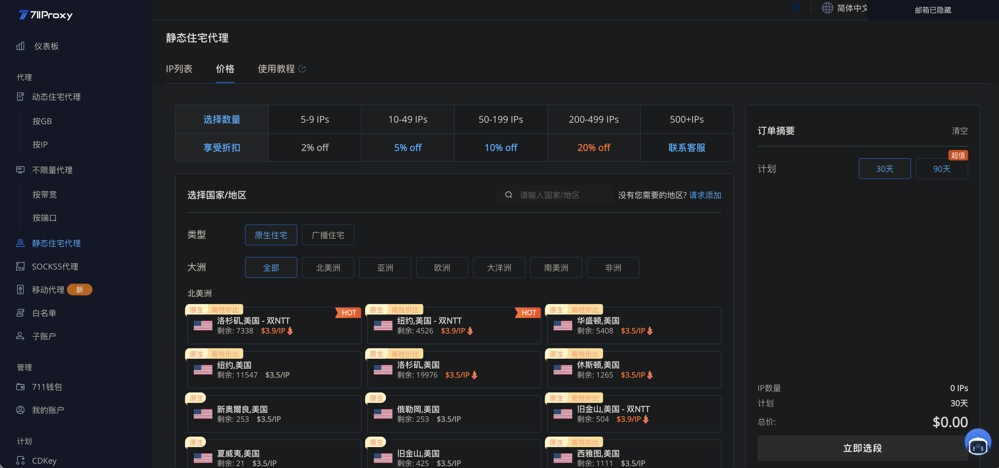
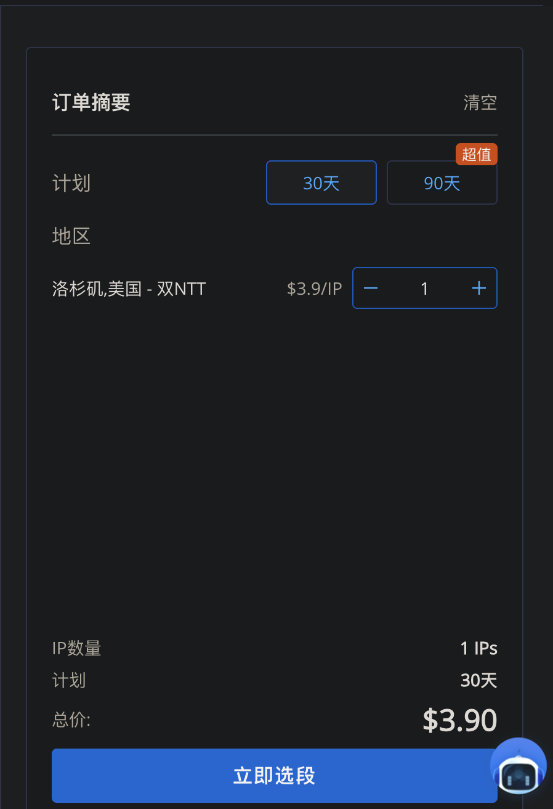
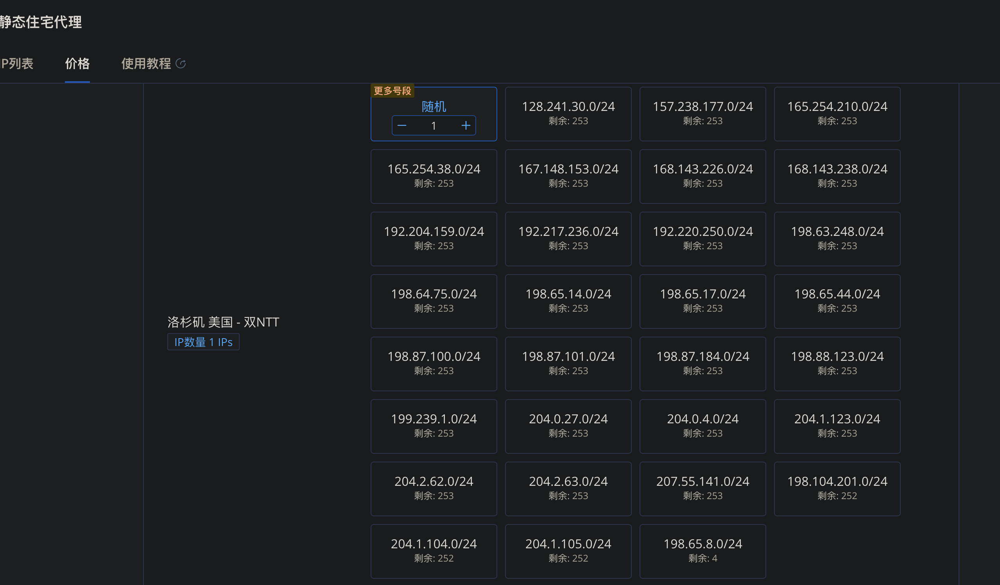
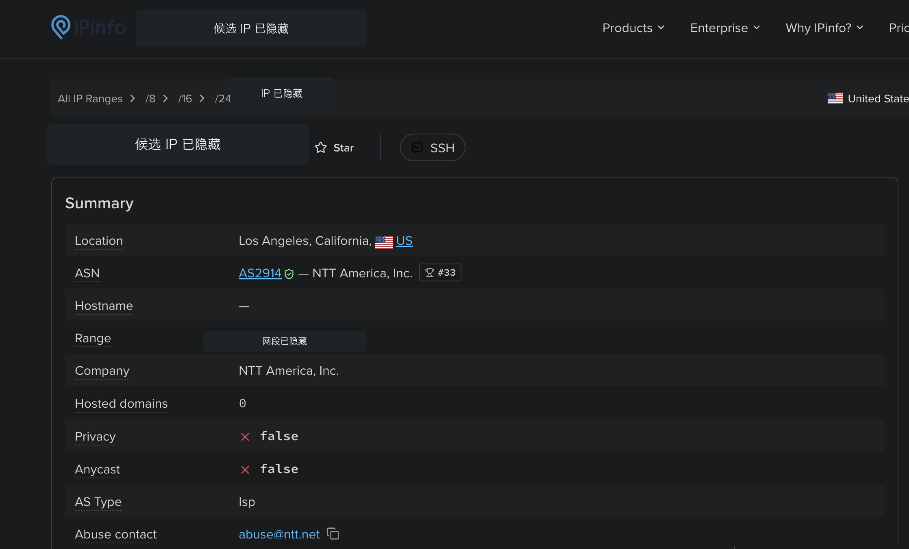
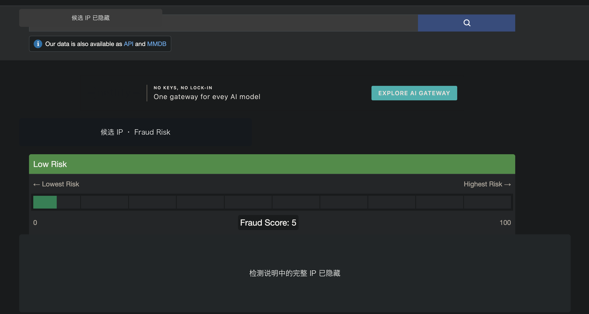
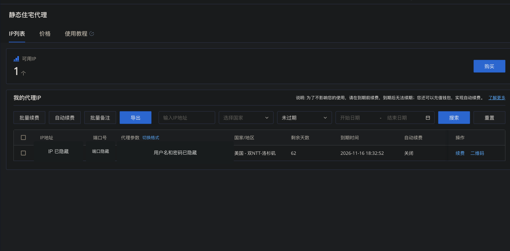
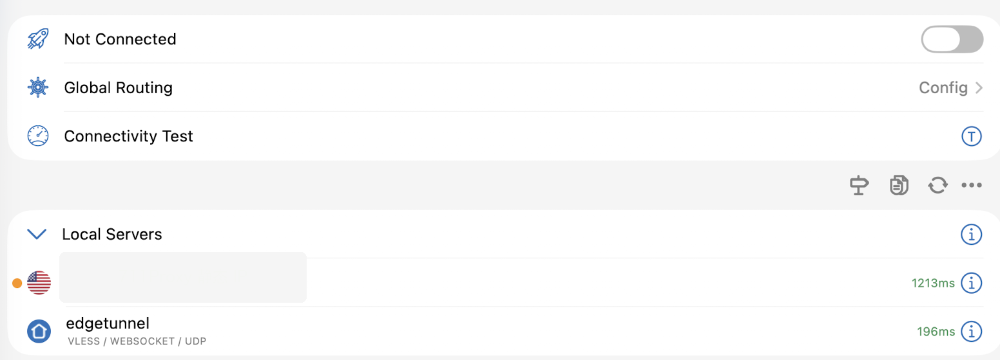
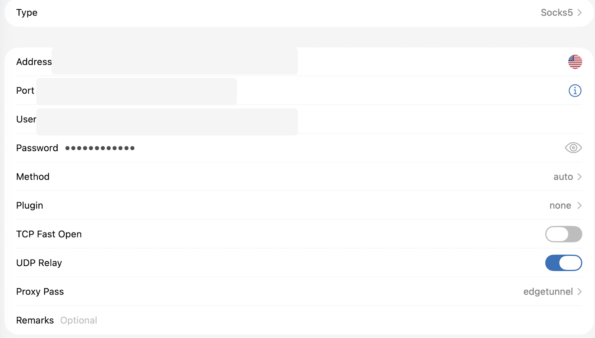

先说明边界：固定 IP 不是申请美国信用卡或使用海外账户的必要条件，也不代表身份、地址或居住地，更不能保证减少验证、提高审批率或改变任何机构的风控决定。请遵守所在地法律及相关服务条款，不要用网络工具虚构资料、规避平台限制或进行未经授权的操作。
联盟披露：本期视频说明中可能包含 711Proxy 邀请链接；如果你通过该链接注册或购买，Evan 可能获得平台奖励，不会增加你的购买价格。本文观点与选择来自个人实际使用。详情可查看广告与联盟披露。
为什么我想固定一个网络出口
之前聊美国账户时，我经常会提到网络环境。后来也有观众问我：普通的网络工具不是也能用吗，为什么还要单独买一个固定 IP？
普通网络工具的出口地址可能会变化，也可能由很多人共用。今天显示洛杉矶，过几天又变成纽约，甚至每次重新连接，地址都不一样。偶尔浏览网页时，这种变化未必带来明显问题；但如果经常登录同一个海外账户，网络位置持续变化，我自己会觉得很乱，一些应用也可能要求重新登录或再次验证。
我购买固定 IP 的原因其实很简单：给自己的设备保留一个相对稳定的美国网络出口。只要线路正常，我就尽量持续使用，不频繁更换地区和出口。
不过，它只是改变设备访问互联网时的出口。它不会改变我的真实身份、账户资料和信用记录，更不意味着换了 IP，信用卡就一定能获批。
静态、专用、住宅或 ISP 分别是什么
静态比较好理解：在租用期间，这个 IP 尽量保持不变。专用表示这条 IP 由自己使用，不需要和很多陌生人挤在同一个公共出口上。
“住宅”或“ISP”这类商品描述需要谨慎理解。它通常表示相应网络段登记在互联网服务提供商名下，但不等于有人真的在美国某套住宅里安装了一条宽带给你使用。购买到的仍然是代理服务，所以不能只看商品名称；我还会核对实际 IP 的运营商、地区和不同数据库的判断。
对我来说，这类服务更适合经常使用自己的海外应用、希望网络地区尽量稳定的人。如果只是偶尔浏览几次网页，一个月只用一两次，就不一定值得长期承担费用。
进入 711Proxy，选择地区和期限
注册以后，我在页面左侧进入“静态住宅代理”，再查看价格。711Proxy 还提供动态住宅、不限量、SOCKS5 等不同产品；这次使用的是静态住宅代理，选择时需要核对清楚。
地区方面，我选择的是洛杉矶的“双 NTT”。NTT 原本是 Nippon Telegraph and Telephone 的缩写，中文通常称为日本电信电话。它是一家规模较大的国际电信和网络运营商。后续检查 IP 时，我看到这段网络属于 NTT America，网络编号是 AS2914。
但“双 NTT”只是 711Proxy 页面上的商品标签，并不是统一的行业标准。我不会因为看到这几个字，就直接认定线路一定更快或更可靠，最终仍然需要核对具体 IP。

期限有 30 天和 90 天。我第一次选择 30 天。截图里的方案是一个 IP、30 天 3.9 美元。先用一个月，观察速度、稳定性和设备是否能够正常连接，满意后再续费，没有必要第一次就购买很长时间。

选择网段：/24 是什么意思
选好地区和期限后，页面会列出多个网段，后面常见 /24。这里容易产生一个误解：/24 不是让人从 0 到 24 里选择数字，而是 CIDR 网络地址的写法，表示前 24 位固定，一个这样的 IPv4 网段总共包含 256 个地址。
不需要自己计算，页面会显示每个网段还有多少地址。挑出候选 IP 后，我不会立刻付款，而是先复制出来检查；正式购买时，再核对最终选中的地址是否就是刚才检查过的那一条。

/24 描述的是网段前缀长度，不是可随意挑选的数字。用 IPinfo 核对地区和运营商
第一个检查工具是 IPinfo。我把候选 IP 输入后，先看 Location。我的结果是 Los Angeles, California，也就是加州洛杉矶，与购买页面选择的地区一致。
ASN 可以理解为一段网络在互联网上的自治系统编号。结果显示 AS2914，运营主体为 NTT America, Inc.；Company 是数据库记录的运营公司。AS Type 显示 ISP，说明该数据库把这个网络主体归类为互联网服务提供商，但这个标签本身不能证明它一定是一条普通家庭宽带。
Privacy 显示 False，代表 IPinfo 当时没有把它标记为常见 VPN、代理、Tor 或托管网络；Anycast 也是 False，表示没有检测到同一个 IP 从多个地点同时对外广播。
这些英文信息看起来很多，我主要确认三件事：地区是否与选择一致、运营商是否为预期的 NTT，以及数据库当时是否存在明显的代理或托管标记。

这些结果只是当前数据库的判断，不是保证书。数据库会更新，不同查询网站也可能给出不同的城市和类型，更不能代替银行或其他平台自己的安全系统。
再用 Scamalytics 交叉检查
随后我用 Scamalytics 检查同一条候选 IP。我的结果显示 Low Risk，Fraud Score 为 5。它的分数范围是 0 到 100，在该网站的模型里，数字越低代表它判断的风险越低。
但页面下方还有一条不能忽略的信息：它认为这不是标准的家庭连接，而可能是用于代理流量的商业服务器。因此，不能只截取绿色的 Low Risk，就声称这条 IP “百分之百干净”。
对我来说，这次结果可以接受：风险分数不高，地区和运营商也符合预期。但银行和其他应用会使用自己的系统判断，IPinfo 与 Scamalytics 都不能替它们作保证。

为什么我选择先检查、再付款
两个网站都检查后，我才回到 711Proxy 完成购买。结算页当时显示支付宝、信用卡等支付方式，实际支持的选项可能变化，应以付款当天的页面为准。
我的顺序是：先挑选候选地址，先核对公开数据库，再购买。这样至少不会在付款后，才第一次看到这条 IP 的运营主体和定位信息。
购买后会拿到哪些信息
购买完成后，这条 IP 会出现在后台的“IP 列表”里，可以看到 IP 地址、端口、剩余天数、到期时间和代理参数。
代理参数通常以冒号分隔，顺序一般是 IP 地址、端口、用户名和密码。这些就是连接所需的凭据，尤其用户名、密码和完整二维码不能公开。本文配图已经把完整 IP、端口和登录信息遮挡。
如果这条 IP 使用正常，我会在到期前续费，尽量保留同一个地址。静态 IP 是租用服务，不是永久资产；到期后没有续费，就可能无法取回原来的地址。

在 Shadowrocket 中导入
我的手机使用 Shadowrocket。711Proxy 后台对应记录右侧有二维码入口，用 Shadowrocket 扫描后，节点会出现在本地列表。
其他客户端的界面可能完全不同，核心都是按软件支持的方式导入主机地址、端口、用户名和密码。二维码本身也包含连接信息，因此录屏或截图时不能完整展示，更不要转发给他人。

Proxy Pass 与链式连接
在我自己的网络环境里，设备不能直接连接这条代理，因此还需要在节点详情的 Proxy Pass 中选择原来能够正常连接的网络线路。流量先经过原来的线路，再从新购买的静态 IP 出去，这类方式通常称为链式代理。
多转发一层后，延迟通常会增加。我更关注网页是否能正常打开、连接是否经常中断，以及重新连接后出口地址是否保持一致。这个设置只是技术上的转发路径，不改变任何账户资料，也不应被用来伪装身份、绕过地区限制或规避平台规则。

实际使用后的感受
这样设置后，我平时登录自己的应用和查看账户可以正常连接。它对我最大的价值不是让网速变快，而是让网络出口相对固定。
我不会只看一次检测就认为万事大吉。重新连接、软件重启后，我会再次检查出口；过几天也会复查，确认地址是否变化。重要账户仍然需要开启双重验证、使用独立强密码，并保留官方恢复方式。固定 IP 不是绝对安全，也不能取代账户本身的安全措施。
总结
这次完整流程可以概括为：先选择静态产品、地区和短期方案；理解 /24 网段；用多个公开数据库核对候选地址；确认后再购买；保护好端口、用户名、密码与二维码；导入手机后持续复查出口是否稳定。
固定美国网络出口对我来说是一项个人网络环境管理选择，不是办理信用卡的必需品，也不是绕过审核或平台限制的方法。第一次尝试时，我更倾向于先购买 30 天，检查、试用并评估真实需求，适合自己再续费。
免责声明：本文仅为个人网络环境使用记录和信息整理，不构成网络安全、金融、法律或税务建议。第三方服务的价格、线路、标签和功能可能变化；使用前请核对官方说明、所在地法律及目标服务条款。任何金融产品和账户决定仍由相应机构独立作出。